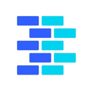

Multi-agent frameworks (2026)
Frameworks for teams of agents that split work, hand off tasks and check each other's output. Here are the top 25 of 56 from the AgentScout directory.
Updated
How we picked and ranked: tools are matched by category, the pricing each maker states and what each tool says it does. They are ranked by GitHub stars as recorded on each listing (link checks 2026-10-19); tools without a tracked repo follow, by listing maturity. No paid placements.

1. Ruflo
Open-source multi-agent meta-harness for Claude Code, Codex, and MCP clients; Oct 13 release adds Mods (mission workflows) and a single control plane with human approval.
Pricing (as stated): Open source (MIT); model costs still apply · Active

2. MetaGPT
Multi-agent framework that assigns roles like product manager and engineer to LLM agents to build software.
Pricing (as stated): Open source · Mature

3. AutoGen
Microsoft's framework for multi-agent conversations, now archived and no longer maintained; Microsoft points new users to Microsoft Agent Framework.
Pricing (as stated): Open source · Archived (no longer maintained)

4. CrewAI
Framework for role-based multi-agent crews.
Pricing (as stated): Open source + paid cloud · Mature

5. Agno
Python framework and runtime for building, running and managing multi-agent systems with memory, knowledge and tools.
Pricing (as stated): Open source + cloud · Mature

6. Oh My Claudecode
Multi-agent orchestration layer for Claude Code that coordinates teams of specialized agents.
Pricing (as stated): Open source · Mature

7. ChatDev
Zero-code multi-agent platform from OpenBMB, grown from a software-development agent company into a general multi-agent orchestration system.
Pricing (as stated): Open source · Mature

8. AgentScope
Framework for building and running transparent multi-agent applications with visual debugging.
Pricing (as stated): Open source · Mature

9. Orkes
Orchestration platform built on Conductor for durable workflows and AI agents.
Pricing (as stated): Open source + cloud · Mature

10. PentAGI
Autonomous multi-agent system for running penetration testing tasks.
Pricing (as stated): Open source · Mature

11. LangChain Deep Agents
Library for long-running agents with subagents and skills; 0.7.23 (Oct 7) adds pinned_skills.
Pricing (as stated): Open source · Active

12. OpenAI Agents SDK (Python)
OpenAI's Python SDK for building multi-agent workflows; v0.23.0/0.23.1 released Oct 1-2.
Pricing (as stated): Open source · Mature, official SDK

13. Haystack
Open-source orchestration framework for building production LLM apps, RAG and agents.
Pricing (as stated): Open source + cloud · Mature

14. Paseo
Orchestrate multiple coding agents from desktop and mobile.
Pricing (as stated): Open source · Mature

15. CAMEL
CAMEL, one of the first multi-agent frameworks, for building role-playing agents and large agent societies.
Pricing (as stated): Open source · Mature

16. DeepCode
Open agentic coding system that turns papers and specs into code with multi-agent orchestration.
Pricing (as stated): Open source · Mature

17. Superset
Agentic IDE for orchestrating many coding agents in parallel.
Pricing (as stated): Source-available · Mature

18. Microsoft Agent Framework
Microsoft's framework for building and orchestrating agents and multi-agent workflows in Python and .NET.
Pricing (as stated): Open source · Mature

19. Agent Orchestrator
Runs and supervises teams of coding agents from planning to merge.
Pricing (as stated): Open source · Mature

20. txtai
All-in-one Python framework for semantic search, LLM orchestration and agents built on an embeddings database of vector, graph and relational indexes.
Pricing (as stated): Open source · Mature

21. Aden Hive
Multi-agent harness for production AI.
Pricing (as stated): Open source · Mature

22. Omnigent
Open-source agent framework and meta-harness that orchestrates Claude Code, Codex, Cursor and other agents together.
Pricing (as stated): Open source · Mature

23. UFO
Microsoft's desktop agent framework that operates Windows apps and orchestrates multi-device tasks as task graphs.
Pricing (as stated): Open source · Mature

24. Oh My OpenCode Slim
Lean multi-agent suite for OpenCode that mixes models and delegates tasks automatically.
Pricing (as stated): Open source · Mature

25. PraisonAI
Multi-agent framework for building a self-improving AI workforce with little code.
Pricing (as stated): Open source · Mature
FAQ
What are the best multi-agent frameworks?
Ranked by tracked GitHub stars, the top multi-agent frameworks in our directory are Ruflo, MetaGPT, AutoGen, CrewAI, Agno. Stars measure popularity, not fit, so compare a few against your own task.
How many multi-agent frameworks does AgentScout list?
56 tools match. This page shows the top 25. Pricing mix on this page: Open source (20), Open source + cloud (4), Source-available (1).
How much do these tools cost?
Pricing is what each maker states on their site. Open-source tools are free to self-host but may need a paid model API key or offer paid cloud plans; freemium tools have a free plan with limits. Check each official site.
Where can I see every tool for building multi-agent systems?
Our task page lists all 65 tools we match to building multi-agent systems.
Related: All tools for building multi-agent systems · Best AI Agent Frameworks · frameworks (32) · coding (14) · security & governance (2) · MCP & infra (2)
Similar searches: Open-source AI agent frameworks · Python AI agent frameworks · TypeScript and JavaScript AI agent frameworks
By role: For AI engineers
All popular searches · AI agents by role · Free tools
Related categories: Frameworks · Coding
Facts come from our directory listings; pricing is as each maker states it and can change. Check official sites before you choose.